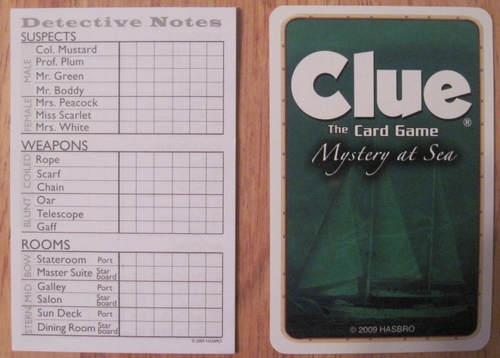

| Name | Role |
|---|---|
| Jason Barret | Project Manager |
| Aaron Newman | Design Lead |
| Toby Pancione | Research Lead |
| Monil Patel | Reporting Lead |
| Tommy Hyres | Prototyping Lead |
| Brandon Bradley | Evaluation Lead |
System Concept Statement
Clue 2.0 will be a modern day upgrade to the classic board game of clue, by providing a new immersive experience utilizing current day technologies. The game will include a new way to keep track of the players clues, cards, and pieces in a manner that brings the game to life. Compared to the current form of the game, Clue 2.0 will offer an innovative digital experience while reducing the time and setup required to play the game and remove the need for the small paper notebooks. This upgrade will alleviate all the old aches and pains of losing game pieces, writing down illegible notes, and the classic general mistrust of friends in a game built upon deceit. A focus on immersive design will emphasis the detective quality of the classic board game while offering friends and family between the age of 8 and 30 new and exciting way to play a game that they already love. The introduction of technology into this board game will bring Clue back into popularity with those who have moved on towards more digital forms of entertainment.
Contextual Inquiry
Prior to meeting with current users, as a group we familiarized ourselves with how a typical game of clue is played. Due to the simplicity of the work domain, the preparation for contextual inquiry was an easy process. As a group we met and discussed what people would be able to hold interviews. Through this meeting we saw that some group members had play the game more often and would be able to find more people to interview. We then brainstormed the initial interview questions to use during the session. We interviewed 3 people about their experiences with clue and board games in general. Because the domain of our project isn't very complex, we decided that 3 different interviews would offer enough insight into how people feel about the game. Most of the contacts tried their best to give thorough answers to the questions we asked. We decided to use these interviews as our main source of raw contextual data. Because the domain isn't very complex we decided that there wasn't a specific need to video tape the interactions. In this regard we primarily used the interviews and note taking as our main source of raw contextual data.
Interviews
Logan
How many times have you played the game clue?Probably about 5 or 6 times
Who's your favorite character to play as?Mrs. White
Is there something special about her?Actually my friends keep telling me that I look like her so I after a while of arguing with them I just decided to go with it. I try to go all out with the roleplaying aspect of the game now.
What aspect of the game do you enjoy the most?I guess it would have to be when all the clues start to come together. I usually make a wild prediction in the beginning based off of intuition and it's fun to see if I was remotely right at the end of the game
What parts of the game would be frustrating to you?Finding enough pencils to play can be very annoying, but what is worse is if you have pencils but no erasers. Also dealing with the small paper notepad can be annoying
Has this frustration ever deterred you from playing the game?Not really, we usually end up finding enough but it does take a lot longer to start playing. And sometimes some of us are forced to play with pens which can be a nightmare if you make a mistake
You mentioned that the notepad could be annoying sometimes, could you elaborate?Sure, so the point of the game is to keep track of the clues that you get with each turn, the game comes with these packets of small "detective" notebooks. The words are tiny on this paper so it's hard to read. And there's not really any extra space to write my ideas down so it's hard to organize my thoughts on it.
Why do you choose to play clue over a video game?I usually play video games alone so if we are in a group it's fun to pass the time with a board game.
What aspects of video games did you wish a board game would have?I guess the graphics aspect is probably the biggest difference to me. Video games are super realistic while board games require more imagination
Sarah
How many times have you played the game clue?I wouldn't be able to begin count how many times I’ve played it, probably over a million.
Who's your favorite character to play as?I would probably say Colonel Mustard, not really sure why but I usually try to get him.
What aspect of the game do you enjoy the most?I think in generally just interacting with my friends, it’s the type of game that it really makes you think so it’s really fun figuring out who did it. I like the concept of the detective theme having that notebook kind of feels like the detectives we see in the movies and TV shows.
What parts of the game do you find frustrating?Probably having to set up, finding everyone pencils is also very annoying. I also find it extremely tedious to write down all the clues on the tiny sheet of paper that they give. I like the concept but I wish it was easier to keep track of my thoughts. We’ve ran out/ lost those little detective note sheets so we've had to print off copies. It’s also easy to look over at someone’s notepad.
Has this frustration ever deterred you from playing the game?Actually a couple of times we were at my friend's house and we didn't have any sort of pens or pencils so we had to find something else to do.
Why do you choose to play clue over a video game?I don't really play video games. But I like playing clue because of the interaction with everyone. I find it more fun than monopoly which can take a very long time and it's not as serious type of game. For me it's a more relaxed type of game. Its fun trying to piece together everything, kind of like what a detective does.
Matt
How many times have you played the game clue?Not really sure, play it once or twice when I go back home with my family. Usually play it with my parents and little brother. Here I usually play it with my roommates and other kids in the hall
What is a typical setting you play Clue in?Usually around a table big enough to fit everyone. Usually we would play after dinner or in the mid-afternoon on weekends.
What aspect of the game do you enjoy the most?How everyone is equally uncertain about who did it in what room with which weapon. It’s actually treated like a mystery where no one has any clue as to who did it.
What parts of the game would be frustrating to you?Cheating has always been an issue whenever I play. It’s almost too easy. Another issue is always not having enough pens/pencils or losing pieces of the game. They’re kind of a hassle to keep track of.
Has this frustration ever deterred you from playing the game?Not really
Why do you choose to play clue over a video game?I guess it's just a fun way to hang out with friends. A lot of things we do these days are through screens and I find it nice to just interact with people through a board game
Contextual Analysis
In order to create the WAAD, we first followed the book in order to create work activity notes. Each group member was assigned an interview to work off of. Then individually we worked on created work activity notes from the raw contextual data. We were careful to follow the guidelines discussed in the UX book. Tagging each work activity note with source ID to ensure that we could find the source. Worked to paraphrase each idea into a declarative statements while also trying to remove the fluff and noise from the interview data. After we individually came up with each note we went in a circle and discussed/read out loud each of the notes that we came up with. We then started the construction of the WAAD. We mixed up all of the work activity notes and distributed them among each group member. In the beginning each person would read their work activity note and then placed it on the wall. This process continued until we felt comfortable enough to the point where we started placing the note on the wall simultaneously. Throughout this process we started to see cluster forms and started to create topical labels for each one, these temporary labels were written on the whiteboard above the cluster. When groups started to form we then started to rearrange the corresponding notes into a vertical line and assigned it a group label. The WAAD shown below was actually the second time our group met up to do it. After our first iteration we saw that we needed to reevaluate and double check our understanding of the WAAD process. The second time that we met up went much better, we all took some time to read the book and understand the process of creating a WAAD. The iterative process really helped us throughout this process.


Sample Work Activity Notes
Matt-There is no way of knowing if other player's are cheating and not divulging information
Sarah-Finding pencils and people is annoying
Sarah-Losing the detective sheets is a common occurrence
Logan - As a player I try to really feel like a detective
Logan - As a player I enjoy when the clues start to come together
Matt - Games can take anywhere from 30 min to a few hours
Logan - Board games require using imagination to visualize progression
Logan - It can be difficult to find enough pens and pencils to play
Matt - There is no way of knowing if another player is cheating
Logan - Board games are great group activities
Other Data Collected
Work Artifact: example of detective sheet in game of clue
Sample Task Data Collected
Jason had to opportunity to observe a group of people play a game of Clue. Through this process he developed raw user work activity data through observations. Below are a few samples of the task data collected:
- One of the players would never look at their cards and mess up the rest of the game
- People waiting for their turn would not pay attention
- Always forgot whose turns it was
- Argument over what space is considered the door and the room
- Rule book as missing
- One player had to use a pen, cause there wasn't enough writing utensils. he struggled to keep track of his thoughts and his sheets was very unorganized
- die kept falling off of the table
- a couple pieces was missing
Design Requirements
Immersion
Emphasis the idea that player is a detective
Source: Logan-4
Make them feel as if they are a detective
Support multiple players at once
Game is played usually in groups of 4-5
Source: Logan-7
Better way to input clues and ideas
Remove the need for small paper detective sheets
Source: Logan-2
Prevent Cheating
Remove possibility of looking at others cards/note pad
Source: Sarah - 5
Track game pieces
Avoid the need to keep track of all the pieces
Source: Matt- 3
Find people to play with
way to search for others who want to play
Source: Matt- 8
Models
Models
As a group we decided to utilize two types of models, a flow model and a social model. The flow model was useful in order to gain a better sense of how the current game is played. Because of the simple work domain, we decided to break the work roles down to two nodes. The player whose turn it is and the players that are waiting for their turn. This made sense to be social model due to the fact that this game is played within groups of people and not individually

Social Model: Player As turn, rest of players waiting

Flow Diagram: Basic flow of the board game